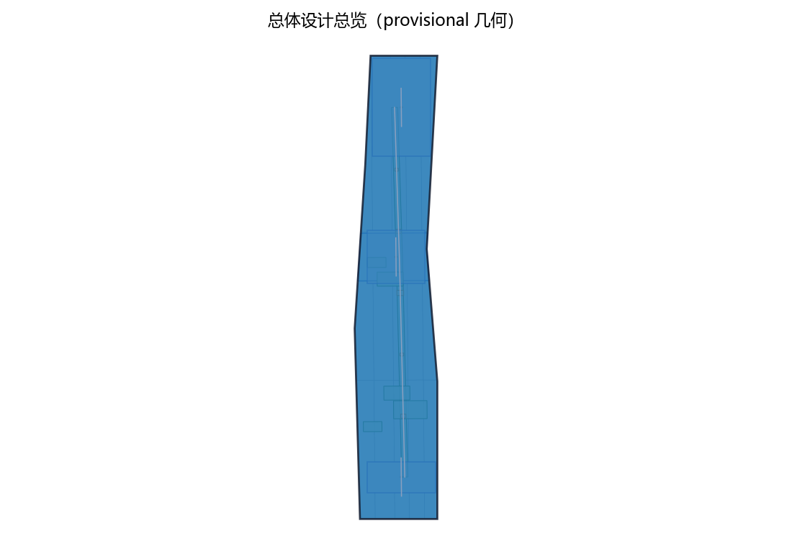
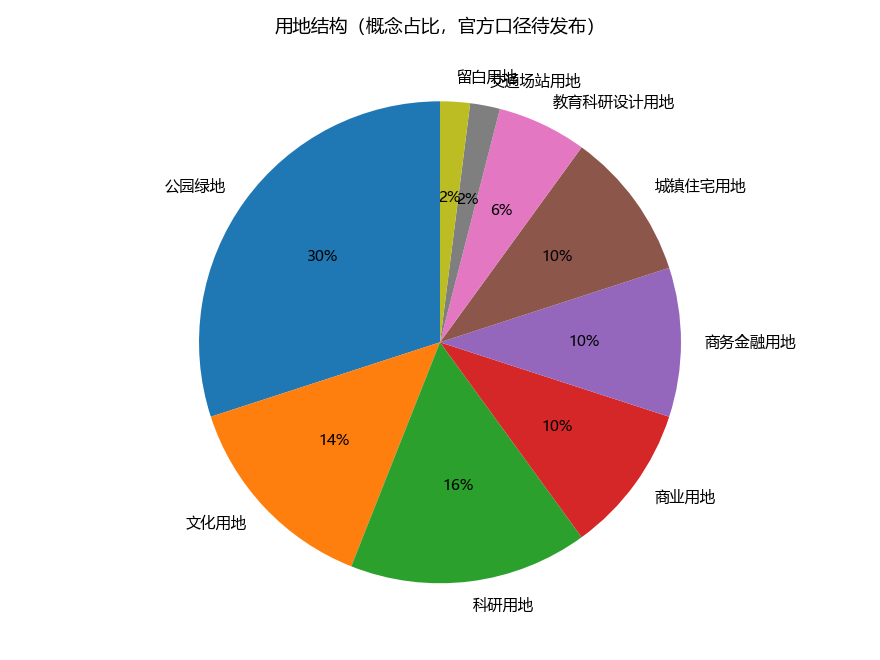
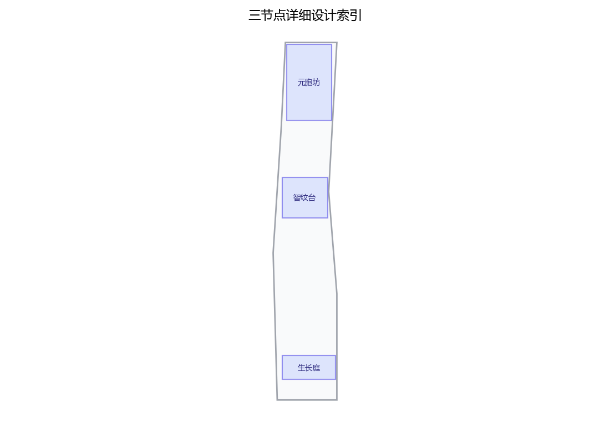
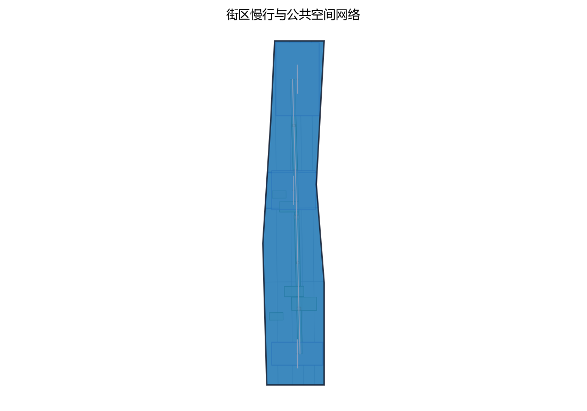
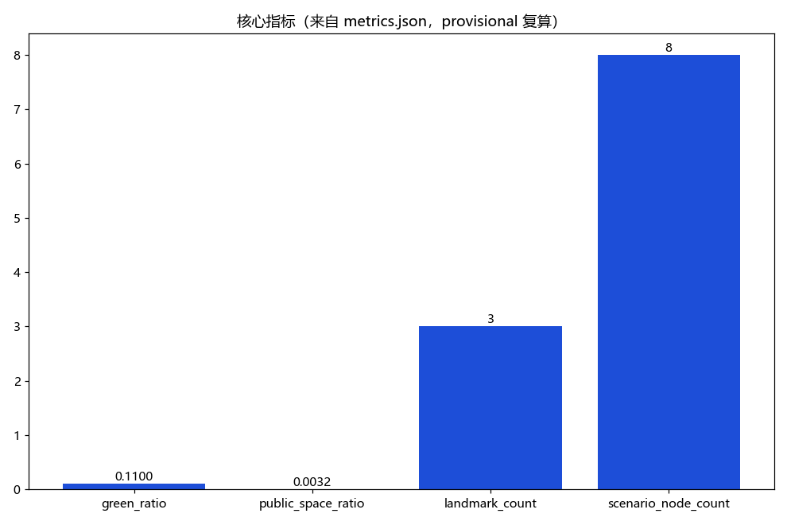

元胞智城：适配AI新质生产力的新型城市形态（概念）
以「元胞智城（CELL·JZ · 适配AI新质生产力的新型城市形态）」构建沿京张AI创新带的新型城市形态概念：以「元胞街坊」为基本单元的AI原生混合功能街区（居住、研发、孵化、服务在同一街坊内混合咬合），AI原生基础设施（算力、能源与数据设施集约共享、建筑一体化，不预设工程数值），虚实融合公共空间（物理空间与数字孪生、AR导览与匿名感知艺术化融合），响应式街道与模块化可逆生长，新型城市形态与国土空间规划创新思路（概念级）；三节点——「元胞坊」（AI原生混合功能基本单元）、「智纹台」（虚实融合公共空间）、「生长庭」（模块化可逆生长街区），五类AI+场景（城市运行数字孪生体AI、形态绩效AI评估、基础设施负荷AI预测、空间使用匿名感知AI、公众反馈AI聚合）仅处理匿名聚合数据、关键决策人工复核、禁止过度监控，交通慢行优先、绿带连续慢行轴贯通节点，分期实施+年度活动体系（新型城市形态开放日、智纹装置艺术周、元胞市集）。全部为概念建议、参考方案，不给出容积率、建筑高度、具体拆改留或工程实施结论，基于 provisional 边界，官方数据发布后复算。
本稿为概念建议稿：不给出容积率、建筑高度、拆改留结论或工程可行性结论；不歪曲历史事实；所有引述以公开资料口径为准，不编造官方数据。
方案主名称建议
主名称建议：「元胞智城」（概念代号 CELL·JZ）。「元胞」取细胞之喻，表达以元胞街坊为基本单元、可生长可演化的城市组织方式；CELL·JZ 仅作内部概念代号（JZ 取自京张历史线名拼音首字母），不构成官方命名依据。备选主名：「织带智城」「随脉智纹带」「合序之城」。以上均为本方案原创概念名称，不含任何真实机构名称或注册商标要素，如后续使用需另行查重确认。
设计依据与资料清单
资料清单所列公开史料、规划报道与通则规范等均为概念工作依据清单，并非本包已获取的数据；本包实际使用的全部数据见 sources.json，未获取项已在风险与缺失数据说明中如实标注。
本章节依据公开任务书技术条目（含 1.3.2「建设适配AI新质生产力的新型城市形态」）组织。资料清单：百年京张AI创新带公开背景（沿京张铁路原线与遗址公园展开，串联中关村、五道口、学院路、上地、清河等片区）、京张铁路历史公开文献、国土空间规划与城市设计公开规范、国际案例公开资料。不采用未经核实的数据，引述均标注来源。
证据锚点：来源、来源（组织方公告与任务书为文本口径依据）。
三层范围工作框架
三层成果逐级传导：统筹研究输出的新型形态与沿线协同判断约束总体设计，总体设计校核的元胞街坊布局、虚实结构与时序生长落实到节点详设；每层均保留与任务书对应章节的机器可读证据锚点，便于评审对照。
建立「统筹研究—总体设计—重点详细」三层工作框架。统筹研究范围：产业、高校、国际化住区与创新带全域协同研判；总体设计范围：控规深度城市设计，组织元胞街坊与虚实融合结构；重点区域：围绕元胞坊、智纹台、生长庭三节点开展详细概念设计。三层逐级收敛、口径一致，为法定规划衔接预留弹性接口。
证据锚点：来源（三层范围划分依据任务书官方文本口径）。
统筹研究范围产业与未来城市研究
产业与城市研究识别新型城市形态的「适配」效应：以元胞街坊把沿线高校、科创片区与国际化住区的功能需求有序组织为双向可达的新型形态单元，形成「形态带—科创片区—住区」三级联动结构；未来城市研究仅作方向性预判，不构成对用地与投资的承诺。
统筹研究范围聚焦新型城市形态与沿线高校、科创片区及国际化住区的协同。研究高校科研外溢与产、研、住混合的咬合方式，科创片区创新链条的组织逻辑，国际化住区的服务与场景需求；识别创新带作为「人—产业—空间」耦合轴的潜力。本层不预设开发强度结论，仅提出协同方向、议题清单与概念情景，作为总体设计的输入。
证据锚点：来源（边界为 provisional，研究范围仅作概念示意）。
总体设计范围城市更新与控规深度城市设计
总体设计强调「以绿带为骨架的新型城市形态」：依托京张铁路遗址公园绿带组织元胞街坊布局与虚实融合结构，元胞单元可逆生长、街道可分时响应；强调更新而非新建，优先利用存量空间植入形态单元；对控规指标只做校核建议，不预设数值结论。
总体设计范围以京张绿带为骨架，提出新型城市形态总体概念：沿线组织元胞街坊基本布局，形成「绿带串联、元胞咬合、虚实叠加」的结构；物理层承载居住、研发、孵化、服务等混合功能，数字层叠加数字孪生与感知信息，构成虚实融合的城市运行框架。本章节只给出形态概念与结构逻辑，不给出容积率、建筑高度等结论，与法定规划关系在合规矩阵中说明。


证据锚点：来源、来源。
重点区域详细设计
三节点的设施选址均为概念点位，须经规划、文保与主管部门评估及专业审查后重新落位；节点间的绿带动线与慢行通道构成完整形态动线，详细平面与剖面以图册与 geometry 层表达。
选取三个原创节点。元胞坊：居住、研发、孵化、服务在同一街坊内混合咬合的AI原生基本单元，功能就近组织、动静互济；智纹台：虚实融合公共空间，以数字孪生、AR导览与匿名感知的艺术化表达组织公共体验；生长庭：模块化可逆生长街区，以可逆模块组织建筑与设施，按需求分期生长、可复原调整。三节点共同验证新型城市形态的可感知、可运维与可持续迭代。

证据锚点：空间数据（三节点示意多边形来自本包 geometry/key_areas.geojson）。
AI 创新生态、人才画像与 AI+ 场景
城市运行数字孪生体AI、形态绩效AI评估、基础设施负荷AI预测为主干场景，每处均配置人工复核兜底；空间使用匿名感知AI、公众反馈AI聚合为支撑场景；仅处理匿名聚合数据、关键决策人工复核双保险，不设过度监控。 围绕AI创新生态提出五个AI+场景：城市运行数字孪生体AI，支撑运行态势呈现；形态绩效AI评估，辅助方案比选；基础设施负荷AI预测，服务集约共享；空间使用匿名感知AI，感知公共空间活力；公众反馈AI聚合，汇集居民建议。全部场景坚持匿名聚合、人工复核原则，仅服务公共治理与体验提升，禁止过度监控与个体追踪。
证据锚点：来源（AI 生成内容治理表述的参照依据）。
用地、建筑规模与拆改留方案
拆改留坚持留改拆并举：以留为主保留遗址公园肌理与铁路历史遗存，存量建筑功能置换为研发、孵化与社区服务，拆除仅限经个案论证的局部疏通慢行零星建筑；全部面积为概念口径，官方数据发布后复算。
采用「留改拆并举」概念口径：以保留历史价值与社区结构为前提，以现状评估与公众协商为依据，精准改造低效空间，审慎处理确需腾退的局部，不预设拆除范围与规模数值。概念阶段仅建立评估维度和分类口径（留、改、拆及复合情形），具体结论留待立项阶段依法定程序确定，避免先入为主的判断。
证据锚点：来源（用地分类名称参照现行国标口径）。
交通、轨道、市政与公共服务设施
以交通慢行优先为核心组织交通概念机制：沿绿带构建连续慢行轴贯通元胞坊、智纹台与生长庭，街道断面按活动需求分时响应（早市、节事、日常模式），衔接沿线高校、园区与轨道站点（接驳以步行与骑行为主），节事交通以轨道交通＋接驳为主、散场分时分区疏导、降低小汽车依赖；市政以集约共享为原则，算力、能源与数据设施建筑一体化概念、优先利用现状设施条件；公共服务配置无障碍与多语服务、社区服务与研习空间，AI决策均设人工复核。
交通以慢行优先为原则：绿带连续慢行轴贯通各节点，衔接轨道站点与公交接驳，形成「轨道为骨干、慢行为日常」的出行结构，鼓励街坊内部短距离步行。市政基础设施以集约共享为方向，能源、算力、数据等设施嵌入街坊并尝试建筑一体化布置，公共服务设施按街坊级与创新带级分级配置，概念阶段不预设工程数值。
证据锚点：来源（市政与慢行设计表述的方法参照）。
蓝绿空间、公共空间与城市风貌
构建「绿带为轴、节点公园为珠」的蓝绿公共空间体系：以遗址公园绿带为蓝绿骨架串联沿线小微绿地与开敞空间，形成连续生态与公共空间体系；虚实装置与公园融合布置、宜轻宜透宜可逆，不遮挡历史遗迹与绿带视线；指示与解说系统统一克制；风貌延续京张铁路工业记忆语汇并与AI新生境氛围对话，整体风貌导控克制统一，避免符号堆砌与口号化包装。
构建以京张绿带为主轴的蓝绿公共空间体系，串联带状绿地、街坊庭院与开放场所，融入生态要素。公共空间强调历史遗存的原真呈现与日常场景的叠加。城市风貌坚持克制统一：以织补协调为原则，克制装饰、统一材质与色彩逻辑，使历史线形、绿带肌理与元胞街坊形成可辨识的整体意象。

证据锚点：来源（蓝绿空间组织的方法参照）。
更新项目清单、实施政策与分期计划
四类项目清单（形态单元试点/慢行贯通/虚实设施植入/形态评估平台）为概念清单，规模与投资估算均为建议性表述；政策建议（功能准入与统筹、多元主体共建、意见复核机制）均须依法依规论证，不构成政府或运营方承诺。
更新项目按「示范节点—骨架工程—网络织补」组织；实施政策着眼混合功能准入、匿名数据使用公约、分期供给弹性等方向。分期计划：近期1-3年启动元胞坊示范与绿带贯通；中期3-5年推进智纹台、生长庭及骨架完善；远期5-10年实现创新带整体形态成形。年度活动包括新型城市形态开放日、智纹装置艺术周、元胞市集，保持公众持续参与。
证据锚点：来源（分期与实施条目对应任务书要求）。
指标体系、面积复算与合规矩阵
混合功能指数、慢行贯通度、虚实设施覆盖数、公众参与人次、形态可逆度五类概念指标体系进入 metrics.json；面积复算以官方文本口径为底，官方数据到位后整体复算并标注复算版本。
指标体系按方向性原则提出：活力（功能混合度、使用时长）、韧性（可逆生长、设施冗余）、共享（设施可达、数据公开）、低碳（集约能耗）等维度，作为评估与迭代的常设框架；面积复算建立「现状盘点—方案布设—法定校核」的程序性流程；合规矩阵逐项核对与上位规划、专项规划的衔接关系。本层仅列框架与程序，不给出具体指标数值与面积结论。

证据锚点：指标、指标、来源。
风险、版权与合规说明
本方案为概念研究性设计，不构成行政审批依据，也不构成容积率、建筑高度、拆改留或工程可行性结论；风险已按元胞街坊与城市交通组织衔接、虚实融合感知与公众数据边界、数字孪生与形态评估技术成熟度、新型形态与公众接受度四维度如实登记于 risk.json（应对原则：匿名聚合、最小必要、人工复核、来源标注与意见通道）；引用公开资料均已标注来源并注明获取时间，图形、名称与文字为原创或公共领域素材，若与既有标识雷同属巧合；新型形态表达不歪曲历史事实，未经授权不使用肖像商标论文图像等版权材料；正式实施前须完成多部门联审、文物保护与安全评估。
本方案为概念建议稿，不构成规划结论、工程可行性结论或拆改留方案，不预设容积率与建筑高度。文中创意命名（元胞坊、智纹台、生长庭等）为本方案原创概念，不指向任何真实机构商标；历史叙述以京张铁路公开史实为准，不歪曲事实。匿名感知场景遵守匿名聚合与人工复核原则，涉及个人信息处理以法律法规与公开数据合约为前提。
证据锚点：来源（征集规则为权属与合规表述的依据）。
参考资料
参考资料以政府正式发布版本为准，按公开/内部分类存档并标注获取时间：京张铁路历史与遗址公园公开材料（含詹天佑与京张铁路公开史料口径）、中关村创新文化公开资料、北京城市总体规划及分区规划公开口径、国内外混合功能街区与新型城市形态公开案例（HafenCity、Zuidas、松岛、马斯达尔及雄安、软件园、深圳湾科技生态园、创智天地）、现场踏勘记录与自绘分析草图（本项目自行采集）；本包 sources.json 仅收录可查证条目，未虚构任何官方数据或链接。
参考资料以公开渠道为限，包括：京张铁路历史与遗址公园公开资料；城市更新与智慧城市建设的公开报道及政策文件；国际案例（伦敦国王十字、新加坡榜鹅、日本柏之叶、斯德哥尔摩皇家海港等）公开资讯；国土空间规划、城市设计与数据安全相关公开规范。引用时标注来源类型，本文不转述未经公开的信息。
证据锚点：来源（本清单首条即组织方公开资料包）。
附录一：用户画像（5类）
1. 科创从业者——AI研发工程师、创业者与孵化器运营者，需要产研住混合咬合的空间与就近交流场所； 2. 高校师生与科研人员——依托沿线高校，需要紧邻实验室的生活、研究支持与学术交往场景； 3. 国际化人才与家庭——面向国际化住区，需要双语标识、多元服务与高品质慢行环境； 4. 原住居民与社区长者——需要被保留的社区记忆、可达的公共服务与日常化公共空间； 5. 访客与数字游民——需要AR导览、市集与活动体验，感受虚实融合的城市公共生活。
附录二：国际案例（4个）
1. 英国伦敦国王十字街区——铁路工业遗存更新的混合功能街区，科创办公、居住、教育与公共空间混合组织，可为铁路遗存再生的形态与运营逻辑提供参照； 2. 新加坡榜鹅数字园区——产、学、研、住混合的智慧园区，基础设施集约共享与数字化运营，可作为元胞街坊基础设施概念的对照； 3. 日本千叶柏之叶智慧城市——以大学为核心的产学住混合更新，能源与数据基础设施一体化、社区参与运营； 4. 瑞典斯德哥尔摩皇家海港——滨水更新与可持续指标体系并行，示范分期生长与环境目标协同的更新方式。
附录三：国内对标（4个）
1. 雄安新区——数字孪生与智能基础设施同步建设的城市形态探索，作为虚实融合结构的概念参照； 2. 北京首钢园——工业遗存更新的复合功能与公共空间实践，与京张同城语境互参； 3. 上海徐汇西岸——工业遗存、文化科创与滨水公共空间融合的更新样本； 4. 广州琶洲西区——以街区单元组织产业集聚与功能混合的产城单元实践。